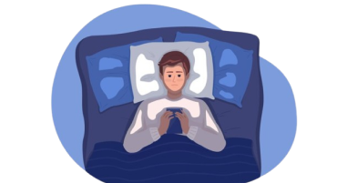
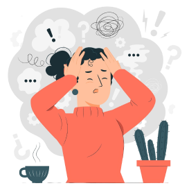

MALEFÍCIOS CAUSADOS
-
PROBLEMAS DE VISÃO
Uma das principais colaborações do uso excessivo de telas é o surgimento de problemas relacionados a visão, devido ao nível de iluminação emitida pela tela do aparelho, além da possibilidade dos problemas oculares serem potencializados por fatores como a proximidade do aparelho relacionado ao rosto e a quantidade de brilho definida.
-

IMPACTOS NO SONO
As telas causam insônia principalmente por emitirem luz azul, que inibe a produção de melatonina, dificultando o sono, e por estimularem o cérebro com conteúdo interativo, mantendo-o em estado de alerta. Isso atrapalha o relaxamento necessário para adormece, tornando o sono mais difícil.
-
VÍCIO E DEPENDÊNCIA
O uso excessivo de telas, principalmente para jogos e redes sociais, pode levar à dependência digital, uma condição em que a pessoa se sente obrigada a usar o dispositivo constantemente, mesmo quando isso interfere em suas responsabilidades diárias, como trabalho, estudo ou convivência familiar.
-

PROBLEMAS FÍSICOS E MENTAIS
O uso excessivo de telas pode causar uma série de problemas físicos, como dores nas costas, no pescoço e nos ombros, além de contribuir para uma postura inadequada. O sedentarismo também é um fator comum, aumentando o risco de desenvolver doenças crônicas como obesidade e problemas cardíacos. Já nos problemas mentais, pode amplificar a ansiedade e a depressão, especialmente entre jovens, ao prejudicar o bem-estar emocional e aumentar a sensação de isolamento. Além disso, o uso prolongado das telas pode reduzir a capacidade de concentração e afetar o desempenho cognitivo em atividades diárias.
Textos adaptados de: